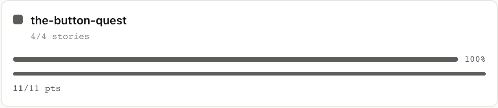
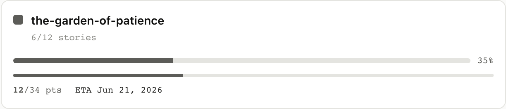
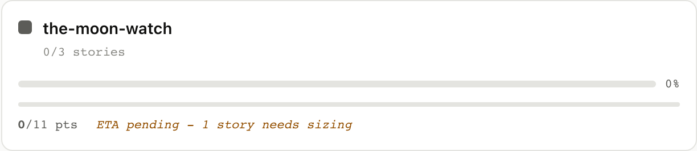

Epics and ETA
6. Epics and ETA
An epic in agilemarkdown is just a slug: any story with
epic: <slug> in its frontmatter belongs to it, and there is no
separate "epic" object beyond the slug itself. The board's Epics
column rolls each slug up into a card with counts, progress, and a
projected ship date.
6.1 A finished epic
the-button-quest is four stories, all accepted in prior weeks,
and the roll-up shows 4/4 stories, 11/11 points, 100%. No ETA is
needed since the epic is already history.

$ am show epic the-button-quest
Epic: the-button-quest 4/4 stories 11/11 pts 100%
[████████████████████████]
Accepted:
★ Count all the buttons in a small wooden box
★ Find a small white button
★ Look in the bushes near the pond
★ Wear the brown coat the whole afternoon
epic_progress returns the same counts plus the ASCII bar.
Full envelope
{
"jsonrpc": "2.0",
"method": "tools/call",
"params": {
"name": "epic_progress",
"arguments": { "slug": "the-button-quest" }
}
}
Response: {total_stories: 4, accepted_stories: 4, total_points: 11, accepted_points: 11, percent_done: 100, ascii: "..."}.
6.2 An in-flight epic with a projected ETA
the-garden-of-patience is twelve stories, six accepted, several
in flight, more unstarted in priority. Every story has an estimate,
so the client computes an ETA from remaining_points / velocity,
anchored to the next sprint Monday.
The card reads "6/12 stories, 12/34 pts, 35%, ETA Jun 21, 2026", with the bar showing the visible fraction and the date showing the math behind it.

$ am show epic the-garden-of-patience
Epic: the-garden-of-patience 6/12 stories 12/34 pts 35%
[████████░░░░░░░░░░░░░░░░]
ETA isn't computed server-side, the React tree does it from
remaining_points (everything not yet accepted) and the project
velocity from priority_list. The MCP tool returns the raw
numbers so any agent can compute its own projection.
Full envelope
{
"jsonrpc": "2.0",
"method": "tools/call",
"params": {
"name": "epic_progress",
"arguments": { "slug": "the-garden-of-patience" }
}
}
What just happened (math)
remaining_points = total_points - accepted_points
sprints_to_ship = ceil(remaining_points / velocity)
eta_monday = next_monday + sprints_to_ship weeks
For the garden epic: (34 − 12) / 7 ≈ 4 sprints. Counting that
many sprint Mondays out from the current sprint lands on the date
the card shows, Jun 21, 2026.
6.3 An epic that can't be projected
the-moon-watch is three stories, two with point estimates and
one (brew the tea) still unsized. The card shows the counts it has
(0/3 stories, 0/11 pts) but refuses to commit to a date, surfacing
ETA pending, 1 story needs sizing in its place. The rule is that
agilemarkdown will not fake a forecast it cannot compute: as soon
as the missing estimate lands the ETA appears.

$ am show epic the-moon-watch
Epic: the-moon-watch 0/3 stories 0/11 pts 0%
[░░░░░░░░░░░░░░░░░░░░░░░░]
epic_progress returns the counts and total_points (here, the 11
points from the two estimated stories); the structuredContent does
not include an ETA because there is none to compute. The React
layer compares the per-story estimates from priority_list against
the epic's total story count and shows the "ETA pending" indicator
when a story is missing one.
Full envelope
{
"jsonrpc": "2.0",
"method": "tools/call",
"params": {
"name": "epic_progress",
"arguments": { "slug": "the-moon-watch" }
}
}